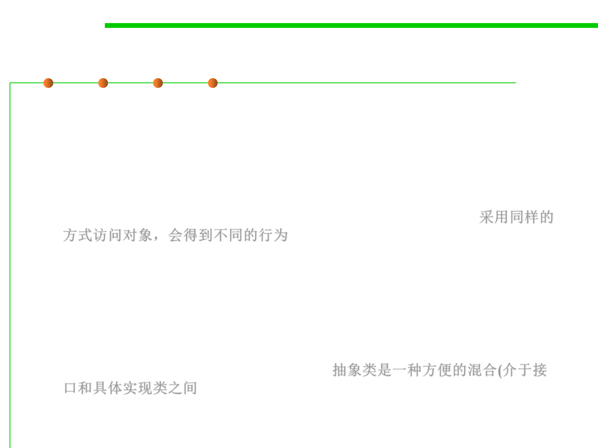

Inheritance and subtyping
3.4 Object-Oriented Programming (OOP)
▪ Inheritance is for code reuse
– Write code once and only once
Class A extends B
– Superclass features implicitly available in subclass
▪ Subtyping is for polymorphism
Class A implements I
– Accessing objects the same way, but getting different behavior 采用同样的
方式访问对象，会得到不同的行为
– Subtype is substitutable for supertype
▪ An interface defines expectations / commitments for clients
▪ A class fulfills the expectations of an interface
– An abstract class is a convenient hybrid 抽象类是一种方便的混合(介于接
口和具体实现类之间
– A subclass specializes a class's implementation